CA-882 AFJROTC Experience
Crescenta Valley High School
-
Freshman Year (ASI) - B-Flight Cadet, selected as MWR Representative in second semester.
-
Sophomore Year (ASII) - C-Flight Cadet, did not make much progress due to covid restrictions.
-
Junior Year (ASIII) - A-Flight Cadet, selected as Logistics Representative in the first and part of second semester.
Cont. participated in Officer interviews and got the NCO(Non-Commisioned Officer) position in MWR(Morale, Welfare, Recreation) as the Fundraising/Public Affairs officer.
-
Senior Year (ASIV) - D-Flight Cadet, appointed as MWR Chairwoman as part of Senior Leadership and Chain of Command.
Cont. participated in ASIII Shadowing and interview.
Description of Fundraising/Public Affairs:
Plans fundraisers
-
Figure out what things like what materials mwr needs, how many people to set up, etc.
Presents potential ventures to raise money
-
Other officers may also think of fundraising opportunities, however this position is in charge or keeping track of all our fundraising plans
Creative
-
Does not necessarily mean you have to be good at art, but you will be the main "idea" person
-
Be willing to further discuss your ideas/compromise
Description of MWR Chairwoman:
-
In charge of the MWR organization
-
Raises money in order to hold special events, such as winter ball or Military Ball, for the cadets
-
In charge of Managerial, fundraising, financial officers
-
Planning events for the corps [First Friday]